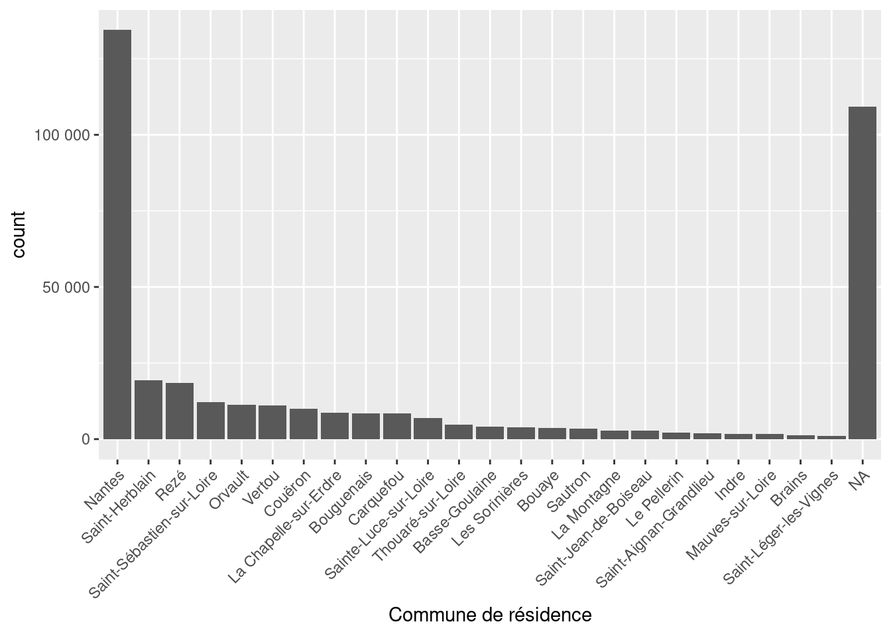
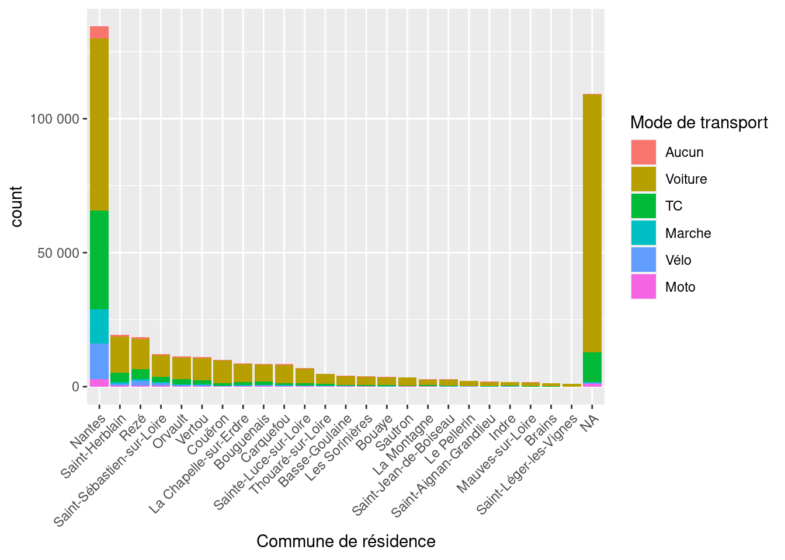
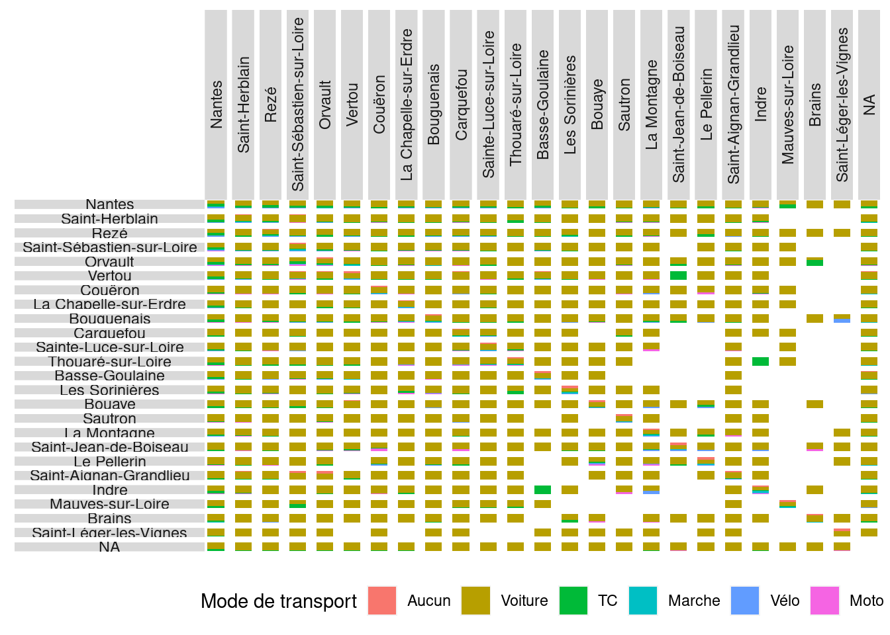
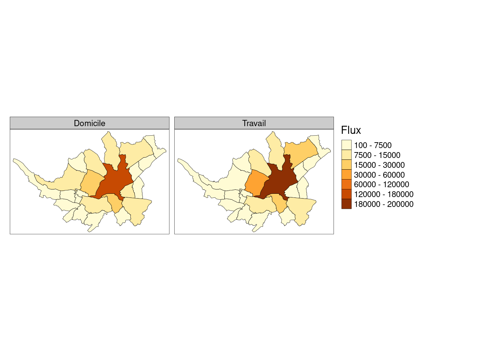

Cas d’étude : mode de transport des trajets domicile travail (Recensement Général de la Population 2018)
Author
Florent Bédécarrats
Chargement des librairies
Code
library(readxl) # pour lire les fichiers excel (liste communes/epci)library(dplyr) # pour les manipulation de donnéeslibrary(tidyr) # pour les pivotslibrary(forcats) # pour modifier des facteurs (variables catégorielles ordonnées)library(purrr) # pour vectoriser les appels avec map() : mieux que les boucles 'for'library(ggplot2) # pour les graphslibrary(plotly) # pour des graphs interactifslibrary(sf) # gère les objets spatiaux, cf. https://geocompr.robinlovelace.netlibrary(stplanr)library(tmap) # pour les carteslibrary(vroom) # Pour une lecture plus performante des csv volumineux
Chargement des données
On utilise vroom qui est ~10x plus rapide pour lire de gros fichiers (pour l’application shiny, on utilisera arrow/parquet, encore 10x plus rapide)
Code
flux <-vroom("data/Recensement/FD_MOBPRO_2018.csv",col_types =cols_only( # on ne charge que certaines colonnesCOMMUNE ="character", # commune de résidenceDCLT ="factor", # commune de travailIPONDI ="numeric", # pondérationTRANS ="factor")) # mode de transport
On reprend la base des communes/epci pour l’année correspondante
Cette fonction liste les code communes correspondant à une intercommunalité Elle prend les arguments suivants en entrée : - Un dataframe ou tibble contenant les intercommunalités au format Insee - Une chaîne de caractères correspondant à une intercommunalité
Code
communes_interco <-function(interco, registre_interco = EPCI_FR) {# TODO : inlure des tests registre_interco %>%filter(LIBEPCI == interco) %>%select(LIBGEO, CODGEO)}
On extrait la liste de communes de Nantes Métropole
Si je l’imprime, il a maintenant repris la modification
Code
mon_graph
Travail sur l’ordre des valeurs
On crée une séquence de noms de communes ordonnée par nombre de flux qu’on intitule : ordre_communes
Code
ordre_communes <- flux_nm %>%group_by(`Commune de résidence`) %>%summarize(flux =sum(IPONDI, na.rm =TRUE)) %>%arrange(desc(flux)) %>%filter(!is.na(`Commune de résidence`)) %>%pull(`Commune de résidence`)
On crée un facteur (càd liste de valeurs ordonnées) en classant par la séquence ordre_communes
Code
flux_nm <- flux_nm %>%mutate(`Commune de résidence`=factor(`Commune de résidence`,levels = ordre_communes),`Commune de travail`=factor(`Commune de travail`,levels = ordre_communes))
Le même graphique, mais avec un ordre décroissant (et les hors EPCI à la fin)
Les données de recensement sont un échantillon : on voyait le nombre de personnes interrogées. On veut tenir compte de la pondération (IPONDI) pour savoir à combien de trajets cela correspond en population totale
Code
flux_nm %>%ggplot(aes(x =`Commune de résidence`, weight = IPONDI)) +geom_bar() +theme(axis.text.x =element_text(angle =45, hjust =1)) +scale_y_continuous(labels = scales::label_number()) # pour avoir des nombres

A noter, l’emploi de ‘::’ avant une fonction. Cela veut dire qu’on dit à R d’utiliser la fonction label_number du package scales sans charger tout le package en question avec ‘library(scales)’
Exercice : télécharger les flux totaux calculés par l’INSEE pour chaque paire de communes https://www.insee.fr/fr/statistiques/fichier/5393835/base-csv-flux-mobilite-domicile-lieu-travail-2018.zip et vérifier que vous obtenez le même chiffre qu’avec les variables de pondération NB ; lINSEE ne calcule pas le détail par part modale, juste les flux totaux entre 2 communes.
Construction d’une vue plus complexe
Afficher les parts modales
Code
flux_nm %>%ggplot(aes(x =`Commune de résidence`, weight = IPONDI,fill =`Mode de transport`)) +# A ajouter pour les modes de transportgeom_bar() +theme(axis.text.x =element_text(angle =45, hjust =1)) +scale_y_continuous(labels = scales::label_number())

Rétablir sur 100%
Code
graph_mod <- flux_nm %>%ggplot(aes(x =`Commune de résidence`, weight = IPONDI,fill =`Mode de transport`)) +# A ajouter pour les modes de transportgeom_bar(position ="fill") +theme(axis.text.x =element_text(angle =45, hjust =1),axis.title.y =element_blank()) +scale_y_continuous(labels = scales::label_percent())
Exercice : mettre l’échelle de l’axe y en pourcentages
Exercice : produire le même graphique avec la commune de travail
On représente la matrice origine destination. NB : Tout se passe sur les 4 premières lignes (facet), la suite n’est que de la mise en forme
Code
graph_od_mod <- flux_nm %>%ggplot(aes(x ="", fill =`Mode de transport`,weight = IPONDI)) +# On pondère à partir de l'échantillonagegeom_bar(position ="fill") +# Pour afficher les résultats en proportionfacet_grid(`Commune de résidence`~`Commune de travail`, # affichage en carreauxswitch ="y") +# labels en ligne à gauche plutôt qu'à droitetheme(axis.text =element_blank(), # pas de texte d'échelle axis.ticks =element_blank(), # pas de tirets de repèresstrip.text.y.left =element_text(angle =0), # orientation des noms de communes en ligne strip.text.x =element_text(angle =90), # orientation des noms de communes en colonnespanel.spacing =unit(0.2, "lines"),axis.title =element_blank(),panel.background =element_rect(fill ="white"),legend.position ="bottom") +guides(fill =guide_legend(nrow =1))# On l'affichegraph_od_mod

Exercice : ajouter un titre aux axes x et y.
Graphique interactif
Il existe différentes manières de créer des graphs interactifs dans R on va ici utiliser plotly, une librairie javascript très populaire
On reproduit le graphique ggplot ‘graph_mod’ créé plus haut, en le passant simplement à plotly avec la fonction ‘ggplotly’
L’argument “tooltip” permet de sélectionner les infos à afficher au passage de la souris sur le graph. Malheureusement, pour afficher un pourcentage correct, on doit faire des calculs préalables afin que les valeurs en entrée soient déjà calculés
On recalcule explicitement les parts modales par commune que ggplot calculait automatiquement afin de pouvoir les passer en entrée
Code
perc_flux <- flux_nm %>%count(`Commune de résidence`, `Mode de transport`, wt = IPONDI) %>%right_join(count(flux_nm, `Commune de résidence`, wt = IPONDI), by ="Commune de résidence") %>%mutate(part_mod =paste("Part modale :", round(n.x / n.y *100, 1), "%","\nTrajets :", round(n.x), "/", round(n.y)))
On passe ces valeurs en entrée à ggplot à une variable “text” pas utilisée par ggplot mais qui pourra être incluse dans l’objet de sortie et récupérée par plotly
Code
graph_mod <- perc_flux %>%ggplot(aes(x =`Commune de résidence`, weight = n.x,fill =`Mode de transport`, text = part_mod)) +# A ajouter pour les modes de transportgeom_bar(position ="fill") +theme(axis.text.x =element_text(angle =45, hjust =1),axis.title.y =element_blank()) +scale_y_continuous(labels = scales::label_percent())
la variable “text” qui contient le pourcentage “bien formé” peut désormais être récupérée et affichée par plotly
Exercice (très difficile, à garder pour la fin peut-être), passer le graphique de matrice origine-destination en interactif.
Création de cartes
Ce qui suit est largement repris de : https://geocompr.robinlovelace.net/transport.html
On va requêter l’API des découpages communaux https://geo.api.gouv.fr/decoupage-administratif/communes
On crée une fonction qui prend en entrée une liste de numéros de communes et un type de géographie et qui renvoie le geojson correspondant cf. https://api.gouv.fr/documentation/api-geo
Code
get_communes <-function(x, geo =c("centre", "contour")) {paste0("https://geo.api.gouv.fr/communes/",x,"?fields=", geo) %>%# forme la requêteread_sf()}
On va ensuite pouvoir vectoriser cette option, càd l’appeler de manière répétée sur un vecteur
Choroplèthe : est une carte thématique où les aires sont colorées pour caractériser statistiquement un phénomène
on calcule les flux par paires de communes pour les afficher sur la carte
Code
flux_domicile <- flux_nm %>%# somme des flux par commune de domicilegroup_by(`Commune de résidence`) %>%summarise(domicile =sum(IPONDI, na.rm =TRUE)) # pour avoir les valeurs en populationflux_travail <- flux_nm %>%# somme des flux par commune de travailgroup_by(`Commune de travail`) %>%summarise(travail =sum(IPONDI, na.rm =TRUE)) # pour avoir les valeurs en populationmobpro_choro_s <- mobpro_choro_s %>%# on les joint à la couche géographiqueleft_join(flux_domicile, by =c("LIBGEO"="Commune de résidence")) %>%left_join(flux_travail, by =c("LIBGEO"="Commune de travail"))
Ensuite on choisit la variable qui servira de base au remplissage (ici ‘travail’)
plus de détails sur https://geocompr.github.io/post/2019/tmap-color-scales/ On prépare un modèle à la main
Code
tm_shape(mobpro_choro_s) +tm_fill(c("domicile", "travail"),#style = "fisher", # Pourbreaks =c(100, 7500, 15000, 30000, 60000, 120000, 180000, 200000), # On arrondi un peu les seuilstext.separator ="-",title ="Flux") +tm_borders(col ="black", lwd =0.5) +tm_facets(free.scales =FALSE, ncol =2) +tm_layout(panel.labels =c("Domicile", "Travail"),legend.format=list(fun=function(x) formatC(x, digits=0, format="d"),text.separator ="-"))

Carte de flux
On récupère le centre des communes
Code
centres_communes_p <-map_df(communes_NM$CODGEO, get_communes, "centre") %>%bind_cols(select(communes_NM, LIBGEO)) %>%# on leur rattache leur nom# la fonction od2line requiert que le champ identifiant soit le premier à gaucherelocate(LIBGEO, .before = geometry)
On calcule les flux entre chaque paire de communes d’abord avec 1 ligne par type de mode de transport (vélo, voiture…)
Code
mobpro_od <- flux_nm %>%group_by(`Commune de résidence`, `Commune de travail`, `Mode de transport`) %>%summarise(trajets =sum(IPONDI, na.rm =TRUE)) %>%# on passe les modes en colonnes pour n'avoir plus qu'1 ligne par paire de communespivot_wider(names_from =`Mode de transport`, values_from = trajets)
On calcule les totaux (on pourrait le faire à partir des modes, mais ça marche aussi comme ça)
Code
mobpro_od <- flux_nm %>%group_by(`Commune de résidence`, `Commune de travail`) %>%# sans mode de transportsummarise(total =sum(IPONDI, na.rm =TRUE)) %>%right_join(mobpro_od, by =c("Commune de résidence", "Commune de travail"))
On exclut les communes extérieures à l’EPCI (pas de géométrie) et les flux où on a la même commune en domicile-travail.
Code
mobpro_od <- mobpro_od %>%filter(!is.na(`Commune de résidence`) &!is.na(`Commune de travail`)) %>%filter(`Commune de résidence`!=`Commune de travail`) %>%# On passe les noms de communes de facteur à caractère pour permettre la jointuremutate(`Commune de résidence`=as.character(`Commune de résidence`),`Commune de travail`=as.character(`Commune de travail`))
On utilise la fonction du od2line du package stplanr A lire : https://docs.ropensci.org/stplanr/
Code
mobpro_od_2l <-od2line(flow = mobpro_od, zones = centres_communes_p)
Cette matrice est bidirectionnelles : le flux Nantes-Rezé se supperpose au flux Rezé-Nantes. On va cumuler les flux en utilisant la fonction od_oneway puis calculer des agrégats en rassemblant les modes de transports d’intérêt